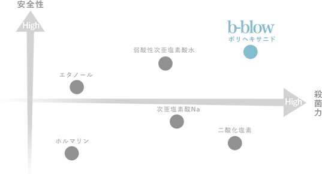

除菌だってこだわりたい、
そんなあなたのためにb-blowは誕生しました。
従来の除菌剤だと匂いが気になって使えない・・・。
子供にも使いたいから、刺激が強いものはなるべく避けたい・・・。
おうちの除菌を１本で済ませたい・・・。
b-blowならあなたのこだわりを全て叶えます。
さっそく、実感できるこだわり除菌を始めてみませんか？
ABOUT
商品概要
次世代の除菌成分、ポリヘキサニヒドって何？

b-blowは、ポリヘキサニドという成分を採用しています。
ポリヘキサニドとは、コンタクトレンズの保存液やウエット
ティッシュにも使われている除菌効果の高い安全な成分のこと。